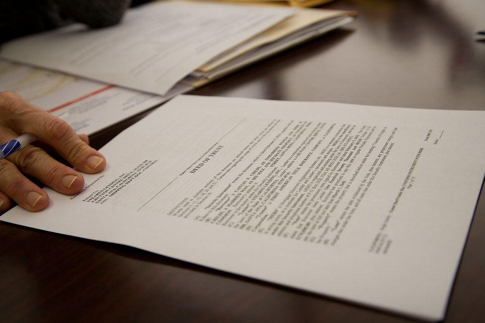
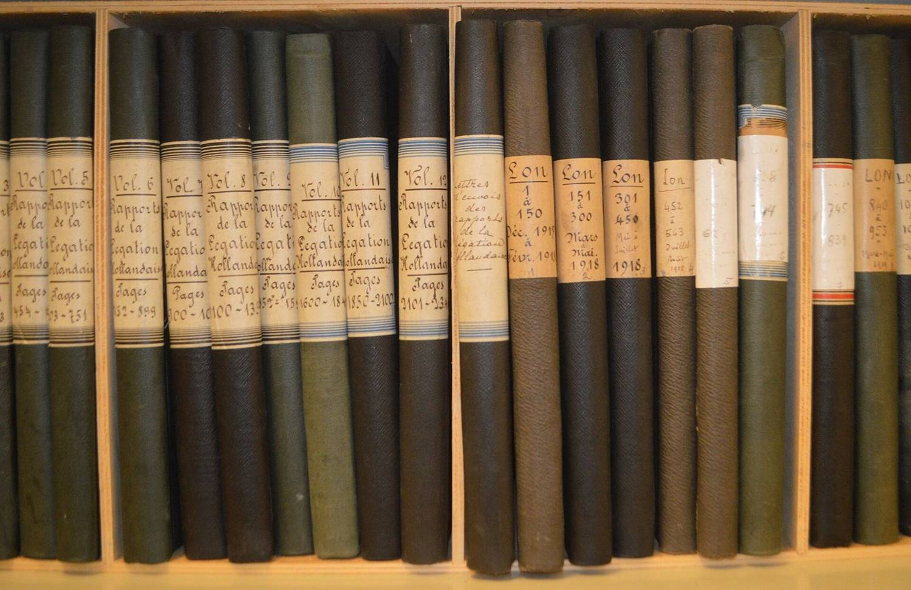
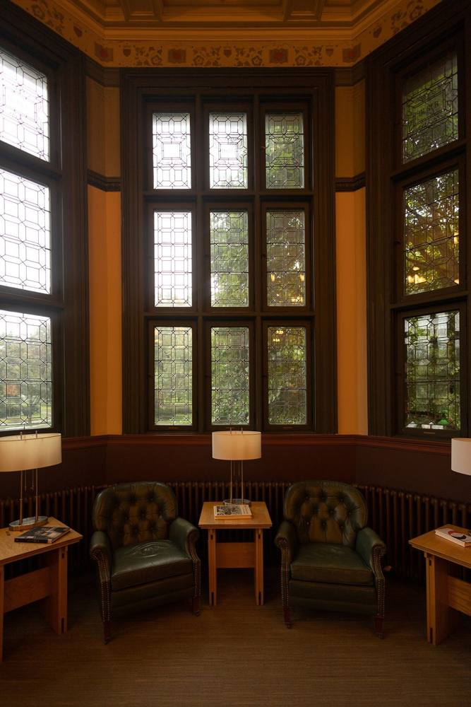
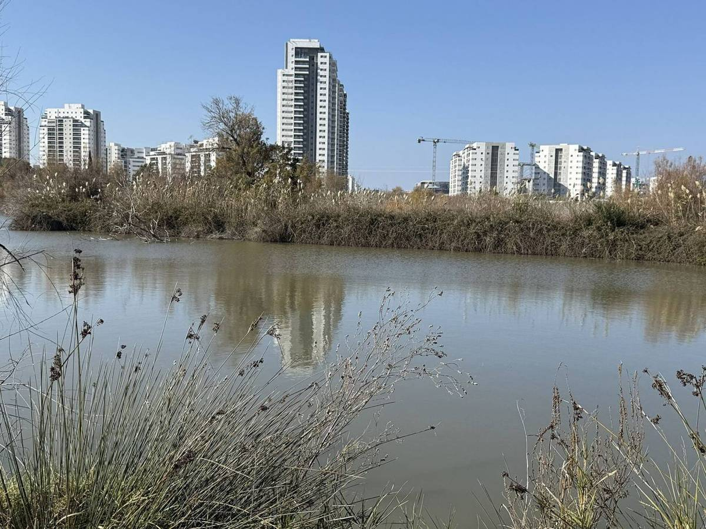

שיחה ראשונהFirst call
מספרים בקצרה מה קרה, בוואטסאפ או בטלפון.Say briefly what happened, by WhatsApp or by phone.
קונספט לדוגמה שנבנה עבור משרד עורכי דין אביב דהן · זה אינו האתר הרשמי של העסקA sample concept built for Aviv Dahan Law Office · This is not the business’s official website



עורך דין ברחוב אילון, קריית ביאליק.A lawyer on Eilon Street, Kiryat Bialik.
אילון, קריית ביאליקEilon St, Kiryat Bialik
התמונות על השולחן להמחשהPhotos on the desk are illustrative
חמש מהן, במילים של מי שכתב.Five of them, in the writers’ own words (translated from Hebrew).
״עורך דין חד, מקצועי ומסור. טיפל בתיק שלי בצורה יוצאת דופן והשיג תוצאה מעבר למה שציפיתי. היה זמין עבורי 24/7. ממליצה לכל מי שמחפש ייצוג אמין ומקצועי״
“A sharp, professional and dedicated lawyer. He handled my case exceptionally and got a result beyond what I expected. He was available to me 24/7. I recommend him to anyone looking for reliable, professional representation.”
״עורך דין מקצועי מאוד, נתן לי הסבר ברור על כל התהליך והרגשתי שיש על מי לסמוך. היה זמין לשאלות וטיפל במקרה שלי בצורה יסודית. ממליץ בחום!״
“A very professional lawyer. He gave me a clear explanation of the whole process and I felt I had someone to rely on. He was available for questions and handled my case thoroughly. Warmly recommended!”
״ממליצה בחום על עורך דין אביב דהן. שירות מקצועי, אמין ויחס אישי מצוין. תמיד זמין, סבלני וקשוב, ונותן תחושת ביטחון לאורך כל הדרך.״
“I warmly recommend lawyer Aviv Dahan. Professional, reliable service and excellent personal attention. Always available, patient and attentive, and he gives a sense of security all the way.”
״עו״ד מקצועי מאוד, זמין לכל שאלה ונותן תחושת ביטחון לאורך כל הדרך. שמח שבחרתי לעבוד איתו וממליץ בחום״
“A very professional lawyer, available for every question, and he gives a sense of security all the way. Glad I chose to work with him, warmly recommended.”
״מקצועי, אמין וזמין. שירות מצוין וליווי משפטי ברמה גבוהה. מומלץ.״
“Professional, reliable and available. Excellent service and high-level legal guidance. Recommended.”
ביקורות גוגל, כפי שפורסמו.Google reviews as published; English versions translated from Hebrew.
מהשיחה הראשונה ועד שהתיק נסגר.From the first call to the closed file.
מספרים בקצרה מה קרה, בוואטסאפ או בטלפון.Say briefly what happened, by WhatsApp or by phone.
מרכזים את מה שיש: חוזים, מכתבים, החלטות.Gather what you have: contracts, letters, decisions.
עוברים יחד על האפשרויות ועל השלבים.Go through the options and the steps together.
הטיפול בתיק מול הצד השני, הרשויות או בית המשפט.The file is handled with the other side, the authorities or the court.
ההליך מסתיים, והתיק עובר לארכיון.The proceedings end and the file goes to the archive.
תמונות להמחשהIllustrative photos
שלוש שורות, וההודעה מוכנה בוואטסאפ.Three lines, and the message is ready in WhatsApp.
אל: עו״ד אביב דהןTo: Aviv Dahan, lawyer · 054-496-0224
שליחה בוואטסאפSend on WhatsApp
אילון, קריית ביאליקEilon St, Kiryat Bialik